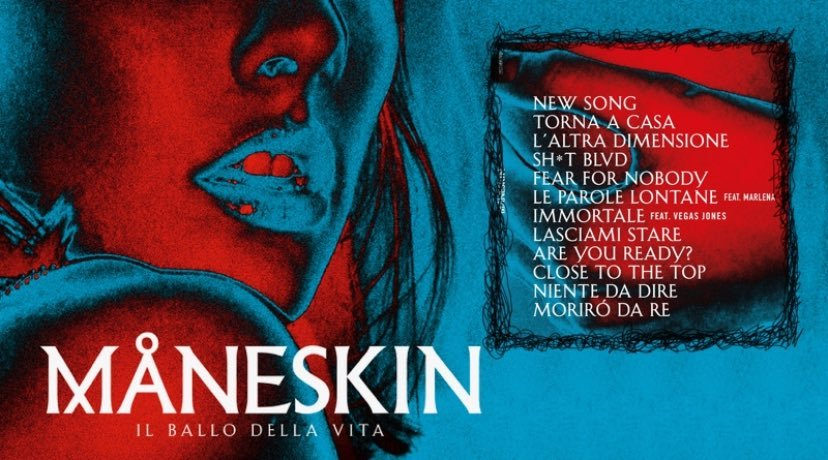
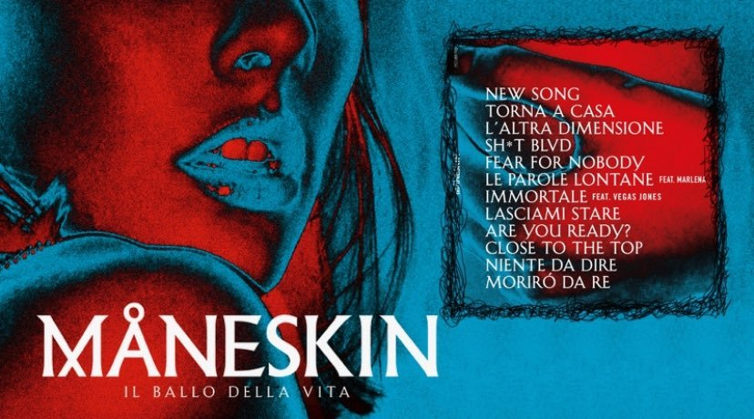

About Il Ballo Della Vita
Il ballo della vita ('The dance of life') is the debut studio album by Italian pop rock band Måneskin. It was released on 26 October 2018. The album peaked at number one on the Italian Albums Chart, managed to reach Top 20 on European music charts, and received a triple platinum certification by FIMI. The album includes the hit singles "Morirò da re", "Torna a casa", "Fear for Nobody", "L'altra dimensione" and "Le parole lontane"
Like in the previous EP Chosen, Il ballo della vita is a modern Italian pop rock record with influences from funk, reggae and ska. In an The Upcoming interview, the band cited Led Zeppelin, Arctic Monkeys, Harry Styles, Red Hot Chili Peppers and Bruno Mars as inspirations for the album. The album's title is meaning a "celebration of youth, of freedom". The central figure of the album's lyrics is the fictional muse "Marlena", a "woman who represents beauty and the message we want to communicate: a message of freedom of choice, of attitude, of style to which we have tried to give a face, a name and a voice". Another protagonist is a man who wants to be with her until the very end. According to Damiano David, she is also a "personification of the fear of not being able to be oneself. Man is security, believing in oneself, like a father or an older brother, and he takes this woman into an objectively uncomfortable situation to bring her to a better version: not changing her, but making her accept herself, her aspirations". Five out of twelve songs in the album contain lyrics in English: "New Song", "Sh*t Blvd", single "Fear for Nobody", "Are You Ready?" and "Close to the Top".